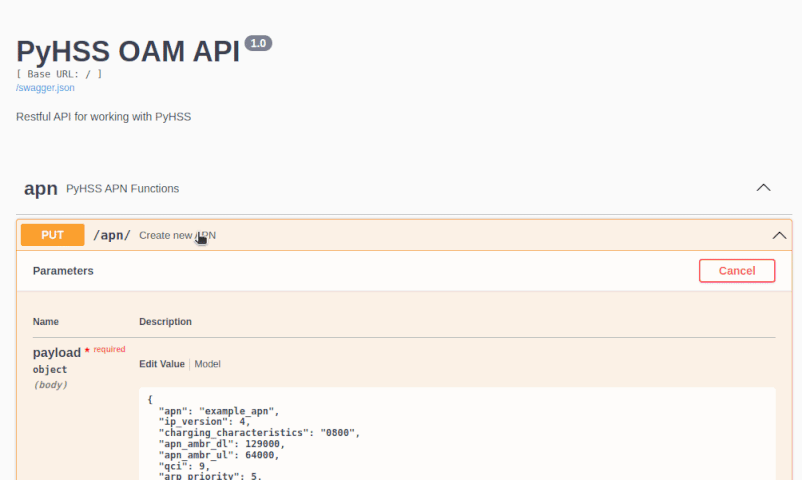

PyHSS
A Diameter Home Subscriber Server written in Python.
PyHSS is the subscriber database and policy side of an LTE (4G) core network. It can act as a standard or VoLTE HSS, an Equipment Identity Register, a PCRF and a GMLC peer, and serves 2G/3G Osmocom components over GSUP. Subscribers live in MySQL, PostgreSQL or SQLite and are managed through a REST API. It exports Prometheus metrics and supports geographic redundancy between instances.
Interfaces
- Diameter base
- Capabilities exchange, device watchdog, disconnect peer.
- S6a
- MME to HSS: authentication, update location, purge, notify. HSS to MME: cancel location, delete subscriber data.
- S13
- MME to EIR: ME identity check.
- Cx
- I-CSCF and S-CSCF to HSS: user authorization, server assignment, location info, multimedia auth. HSS to S-CSCF: registration termination.
- Sh
- Application server access to IMS and XCAP data.
- SLh
- GMLC lookup of the subscriber's serving MME.
- Rx
- P-CSCF to PCRF: AA and session termination, triggering Gx re-auth for dedicated bearers.
- Gx
- Credit control and re-auth, including installing charging rules on demand.
Install
The quickest way is Docker Compose, which starts the Diameter, HSS, API and GSUP services and Redis, bound to localhost, with an SQLite database:
git clone https://github.com/nickvsnetworking/pyhss.git
cd pyhss/docker
docker compose up --build -dA prebuilt image of the current master branch is available. It is rebuilt on every push, so pin it by digest if you use it:
docker pull ghcr.io/nickvsnetworking/pyhss/pyhss:latestFor production, use the Debian and Ubuntu packages from the releases page, or build the image from a release tag:
git checkout 2.0.1
docker build -f docker/Dockerfile -t pyhss:2.0.1 .
Set the bind address, Diameter hostname, realm, PLMN and transport in
config.yaml. TCP is the production-tested transport; SCTP
works but is experimental. In Docker, most options can be set through
the environment variables in docker/.env, which fill the
docker/config.yaml template.
The API listens on port 8080 and serves Swagger documentation under
/docs/:

Services
Each service does one job; they communicate over Redis.
- diameterService
- Diameter transport and peer state.
- hssService
- Request decoding, encoding and HSS logic.
- apiService
- REST API for provisioning.
- gsupService
- GSUP for 2G/3G Osmocom components.
- georedService
- Geo-redundancy messages and webhooks.
- databaseService
- Experimental: copies MySQL/PostgreSQL tables into Redis; not used by the other services yet.
- logService
- Optional: writes logs queued in Redis to files. Every service also logs to stdout.
- metricService
- Prometheus metrics.